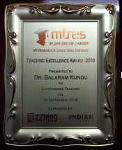
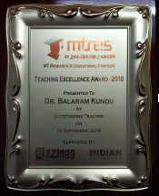

Dr. Balaram Kundu Honoured With Teaching Excellence Awards 2018
An award is something given to a person in recognition of his excellence in a certain field. Teaching Excellence Awards 2018 (TEA - 2018) was an effort of MT Research and Educational Services (MTRES) in association with Buzzingg and Indian Achievers Story to recognition the best teachers (Nation Builders) for their special contribution in respective domain. Meet one of the awardees, Dr. Balaram Kundu, who has been honoured with TEA-2018 as Outstanding Teacher.
 

I feel MTRES are doing excellent work for giving recognition to those teachers who deserve to receive this type of award for their dedication to academics.
D.r Balaram Kundu
Excellent teacher and scientist, Dr. Balaram Kundu is nothing but an amazing role model to all engineers. Presently Professor in Department of Mechanical Engineering at Jadavpur University, Kolkata, Dr. Kundu graduated in 1993 with a Bachelor’s Degree in Mechanical Engineering from Regional Engineering College, Durgapur (Now NIT Durgapur) after which he acquired a Master’s Degree in Thermal Engineering in 1995 from Bengal Engineering College, Shibpur (now IIESTS) and went on the complete his Ph.D in Mechanical Engineering in 2000 from IIT Kharagpur. Dr. Kundu is an expert in Analytical Heat Transfer, Solar Collector, Thermal Insulation, Extended Surface Heat Transfer, Fin and Tube heat Exchanger, Biological Heat Transfer, Electro-Osmotic Flow, etc. and has authored 95 research papers in numerous International Journals for the same. Most of the papers were published with sole or first authorship. Dr. Kundu has received a GATE Fellowship during his M.E. Program from UGC, India and an Institute Scholarship during his Ph.D Program from IIT Kharagpur. In 2001 Dr. Kundu’s biography was published in the Marquis Who’s Who in the world.
Dr. Kundu started his career as a Senior Lecturer at the Jadavpur University in January 2003. He also worked as Research Professor in School of Mechanical Engineering at the Hanyang University, Seoul, South Korea as a part of the Brain Korea 21 Program (2010-2012). Besides this, Dr. Kundu was also a visiting Research Professor in Hanyang University (2013-2015 & 2017) and Michigan Technological Institute (2016). Dr. Kundu teaches many courses at the Graduate and Undergraduate levels, which include subjects as Conduction Heat Transfer, Computational Heat Transfer and Heat and Mass Transfer at the Graduate level and Heat Transfer, Thermal Engineering, Engineering Drawing, Prime Mover for Electrical Systems, and Steam Turbines at the Undergraduate Level. Dr. Kundu was awarded the Outstanding Faculty Award (Venus International Foundation, 2015), The Teacher’s Excellence Award under the category, Number of Research Papers/Books published (Confederation of Education Excellence, 2015). Dr. Kundu has also guided many of his students in their Ph.D Thesis and PG Thesis.
Prof. B. Kundu with Prof. K.-S. Lee (right) and his research team at Hanyang University, South Korea
Dr. Kundu’s research work has brought him numerous awards and medals, and inspires engineers throughout the world to strive harder. Dr. Kundu holds the first place for the most number of research papers published from India on the field of augmentation of heat transfer using fins. Dr. Kundu’s research work has led him to various countries like Thailand, Japan, UK, Netherlands, Spain, USA, and Turkey for collaborative work. He has received the Institutional Medal for 1997-1998 for the best paper published (Journal of the Institution of Engineers), the award for Distinguished Scientist (Venus International Research Award, 2017) and the Outstanding Scientist Award (Venus International Foundation Research Award, 2015). Dr. Kundu’s research encompasses areas like Analytical Heat Transfer, Condensation in Heat Transfer, Fin-and-Tube Heat Exchanges, Combined Heat and Mass Transfer, Flat Plate Solar Collectors, Solar Assisted Vapor Absorption Cooling Systems, Individual Fins and Sin Arrays and more. Dr. Kundu is an active member of the Institution of Engineers (India), Combustion Institute (India) and International Association of Engineers. He holds the position of Editor and editorial board member in the Journal of Thermal Engineering, American Journal of Heat and Mass Transfer, International Journal of Thermal Energy and Applications, American Journal of Scientific Research and Essays, Academic Journal of Applied Engineering and many others. Dr. Kundu presently holds the total cumulative impact points of 239.84 and a RG Score of 39.38 for his research papers which might be the highest in his department. At present, Dr. Kundu’s Google Scholar h-Index is at 25 and Scopus h-index at 22.
Prof. B. Kundu with Prof. A. Miyara at Saga University, Japan
Dr. Kundu’s research work has brought him numerous awards and medals, and inspires engineers throughout the world to strive harder. Dr. Kundu holds the first place for the most number of research papers published from India on the field of augmentation of heat transfer using fins. Dr. Kundu’s research work has led him to various countries like Thailand, Japan, UK, Netherlands, Spain, USA, and Turkey for collaborative work. He has received the Institutional Medal for 1997-1998 for the best paper published (Journal of the Institution of Engineers), the award for Distinguished Scientist (Venus International Research Award, 2017) and the Outstanding Scientist Award (Venus International Foundation Research Award, 2015). Dr. Kundu’s research encompasses areas like Analytical Heat Transfer, Condensation in Heat Transfer, Fin-and-Tube Heat Exchanges, Combined Heat and Mass Transfer, Flat Plate Solar Collectors, Solar Assisted Vapor Absorption Cooling Systems, Individual Fins and Sin Arrays and more. Dr. Kundu is an active member of the Institution of Engineers (India), Combustion Institute (India) and International Association of Engineers. He holds the position of Editor and editorial board member in the Journal of Thermal Engineering, American Journal of Heat and Mass Transfer, International Journal of Thermal Energy and Applications, American Journal of Scientific Research and Essays, Academic Journal of Applied Engineering and many others. Dr. Kundu presently holds the total cumulative impact points of 239.84 and a RG Score of 39.38 for his research papers which might be the highest in his department. At present, Dr. Kundu’s Google Scholar h-Index is at 25 and Scopus h-index at 22.
Prof. B. Kundu with Prof. S. Wongwises (left) at Yildiz Technical University, Turkey.
Prof. B. Kundu with Prof. Y.A. Cengel at Yildiz Technical University, Turkey
Dr. Kundu not only pioneered in the field of research but also in the teaching field in Mechanical Engineering. A lot of his research contribution has been filed for patents. He has been offered tenures in various universities throughout the world. With 11 publications in National Conferences, 9 publications in International Conferences, 2 book chapters, and 95 publications in International Journals, Dr. Kundu continues his work as a scientist and a teacher with great vigor and enthusiasm. Dr. Kundu is a great inspiration to not only engineers but to students of all fields throughout the world. Dr. Kundu not only pioneered in the field of research but also in the teaching field in Mechanical Engineering. A lot of his research contribution has been filed for patents. He has been offered tenures in various universities throughout the world. With 11 publications in National Conferences, 9 publications in International Conferences, 2 book chapters, and 95 publications in International Journals, Dr. Kundu continues his work as a scientist and a teacher with great vigor and enthusiasm. Dr. Kundu is a great inspiration to not only engineers but to students of all fields throughout the world.